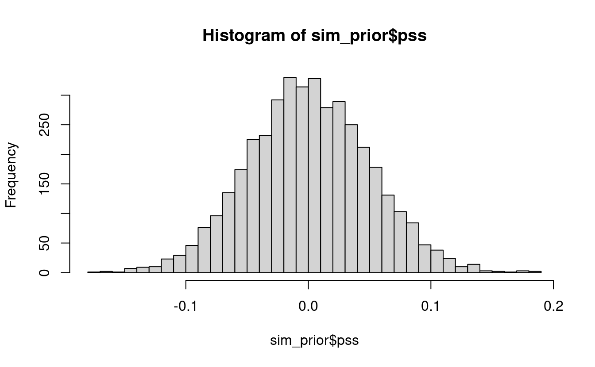
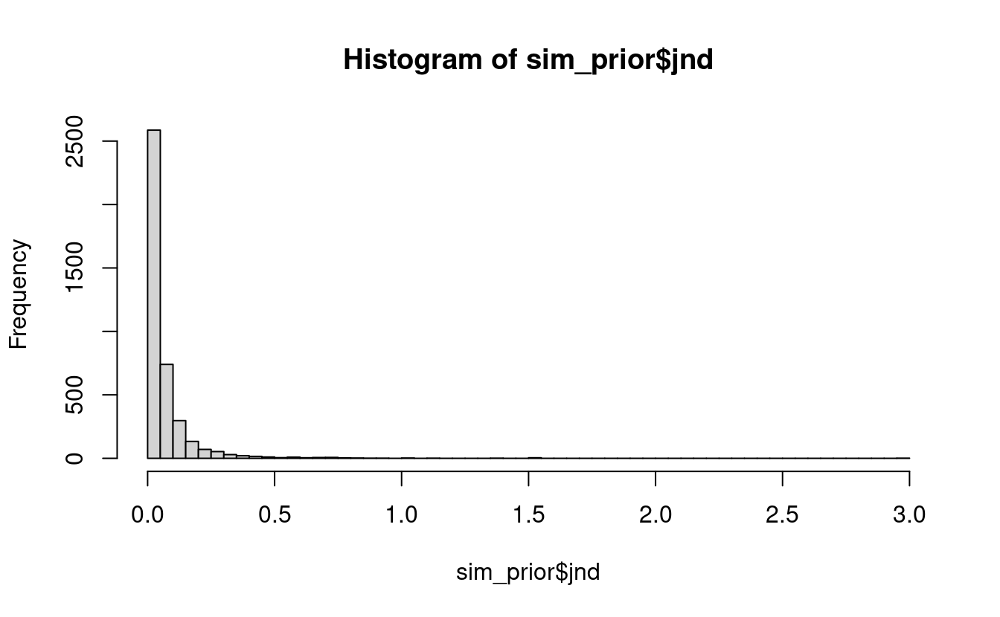
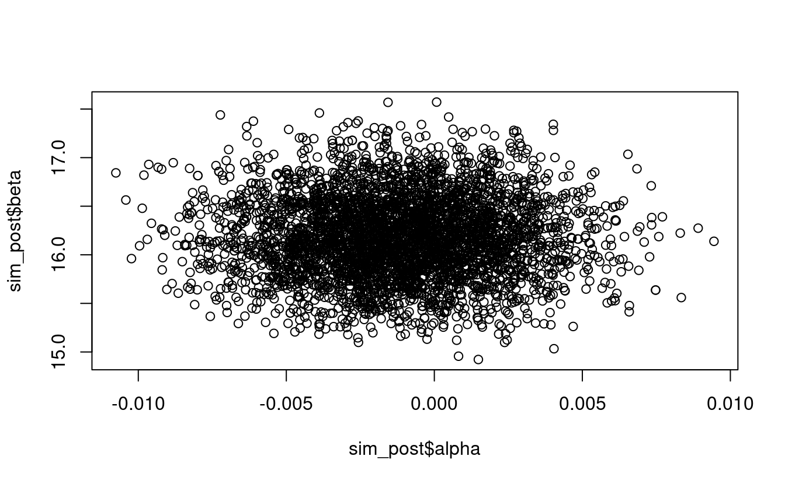
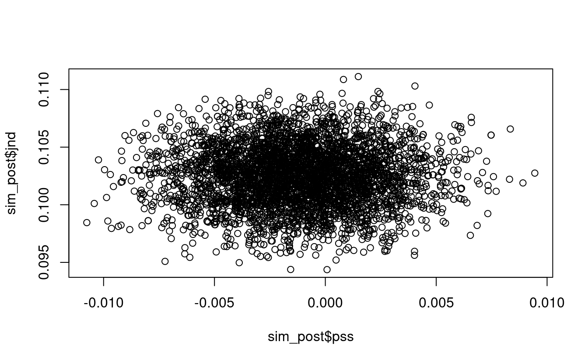
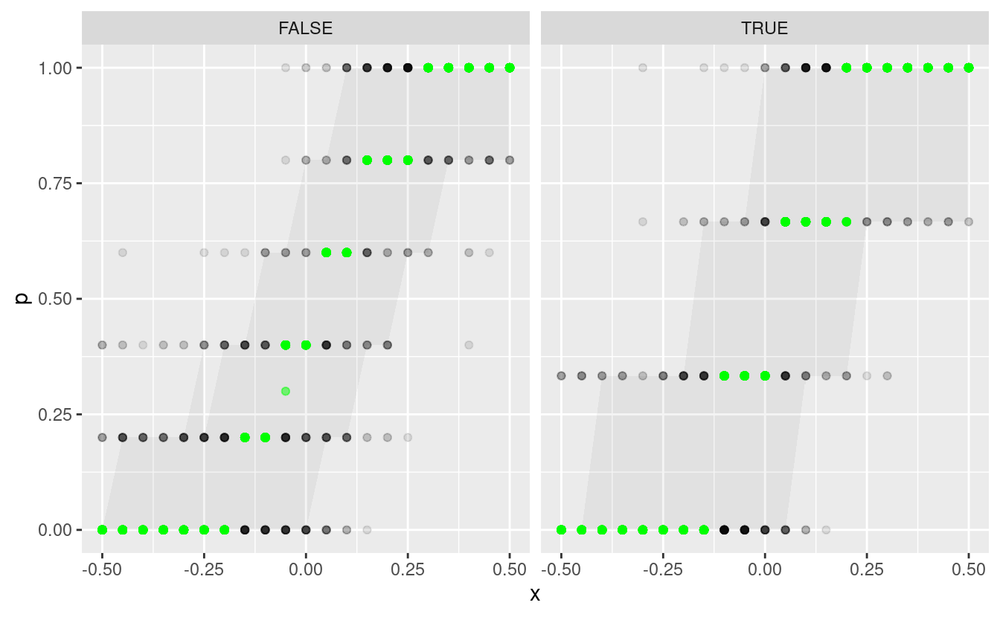

5 Principled Bayesian Workflow
There are many great resources out there3 for following along with an analysis of some data or problem, and much more is the abundance of tips, tricks, techniques, and testimonies to good modeling practices. The problem is that many of these prescriptions are given without context for when they are appropriate to be taken. According to Betancourt (2020), this leaves “practitioners to piece together their own model building workflows from potentially incomplete or even inconsistent heuristics.” The concept of a principled workflow is that for any given problem, there is not, nor should there be, a default set of steps to take to get from data exploration to predictive inferences. Rather great consideration must be given to domain expertise and the questions that one is trying to answer with the data.
Since everyone asks different questions, the value of a model is not in how well it ticks the boxes of goodness-of-fit checks, but in consistent it is with domain expertise and its ability to answer the unique set of questions. Betancourt suggests answering four questions to evaluate a model by:
- Domain Expertise Consistency - Is our model consistent with our domain expertise?
- Computational Faithfulness - Will our computational tools be sufficient to accurately fit our posteriors?
- Inferential Adequacy - Will our inferences provide enough information to answer our questions?
- Model Adequacy - Is our model rich enough to capture the relevant structure of the true data generating process?
- Scope out your problem
- Specify likelihood and priors
- check the model with fake data
- fit the model to the real data
- check diagnostics
- graph fit estimates
- check predictive posterior
- compare models
5.1 Pre-Model, Pre-Data
Wed begin the modeling process by modeling the experiment by the description of how it occurred and how the data were collected. This first part consists of conceptual analysis, defining the observational space, and constructing summary statistics that can help us to identify issues in the model specification.
5.1.1 Conceptual analysis
In section 2.2 we discussed the experimental setup and data collection. To reiterate, subjects are presented with two stimuli separated by some temporal delay, and they are asked to respond as their perception of the temporal order. There are 45 subjects with 15 each in the young, middle, and older age groups. As the SOA becomes larger in the positive direction, we expect subjects to give more “positive” responses, and as the SOA becomes larger in the negative direction, we expect more “negative” responses. By way the experiment and responses are constructed, we would not expect to see a reversal of this trend unless there was an issue with the subject’s understanding of the directions given to them or an error in the recording device.
We also know that after the first experimental block the subjects go through a recalibration period, and repeat the experiment again. We are interested in seeing if the recalibration has an effect on temporal sensitivity and perceptual synchrony, and if the effect is different for each age group.
5.1.2 Define observational space
The response that subjects give to a TOJ task is recorded as a zero or a one (see section 2.2), and their relative performance is determined by the SOA value. Let \(y\) represent the binary outcome of a trial and let \(x\) be the SOA value.
\[\begin{align*} y_i &\in \lbrace 0, 1\rbrace \\ x_i &\in \mathbb{R} \end{align*}\]
If the SOA values are fixed like in the audiovisual task, then the responses can be aggregated into binomial counts, \(k\).
\[ k_i, n_i \in \mathbb{Z}_0^+, k_i \le n_i \]
In the above equation, \(\mathbb{Z}_0^+\) represents the set of non-negative integers. Notice that the number of trials \(n\) has an index variable \(i\). This is because the number of trials per SOA is not fixed between blocks. In the pre-adaptation block, there are five trials per SOA compared to three in the post-adaptation block. So if observation 32 is recorder during a “pre” block, \(n_{32} = 5\), and if observation 1156 is during a “post” block, \(n_{1156} = 3\).
Then we also have the three categorical variables – age group, subject ID, and adaptation. For the first two, we treat them as factor variables. Rather than using one-hot encoding or dummy variables, we leave the age levels as categories and fit a coefficient for each level. Among the benefits of this approach is the ease of interpretation and ease of working with the data programmatically. This is especially true at the subject level. If we used dummy variables for all 45 subjects, we would have 44 different dummy variables to work with, times the number of coefficients that make estimates at the subject level. In the final iteration of our model, this can be as many as \(44 \times 4 = 176\) dummy variables for the subject level!
Age groups and individual subjects can be indexed in the same way that the number of trials is accessed. \(S_i\) refers to the subject in record \(i\), and similarly \(G_i\) refers to the age group of that subject. Observation 63 is for record ID av-post1-M-f-HG, so then \(S_{63}\) is M-f-HG and \(G_{63}\) is middle_age. Under the hood of R, these factor levels are represented as integers (e.g. middle age group level is stored internally as the number 2).
We treat the pre- and post-adaptation categories as a binary indicator referred to as \(trt\) (short for treatment) since there are only two levels in the category. In this setup, a value of 1 indicates a post-adaptation block. We chose this encoding over the reverse because the pre-adaptation block is like the baseline performance, and it seemed more appropriate to interpret the post-adaptation block as turning on some effect.
In the Stan modeling language, data for a binomial model with subject and age group levels and treatment is specified as
data {
int N; // Number of observations
int N_S; // Number of subject levels
int N_G; // Number of age group levels
int n[N]; // Trials per SOA
int k[N]; // binomial counts
vector[N] x; // SOA values
int S[N]; // Subject identifier
int G[N]; // Age group identifier
int trt[N]; // Treatment indicator
}5.1.3 Construct summary statistics
In order to effectively challenge the validity of a model, we construct a set of summary statistics that help answer the questions of domain expertise consistency and model adequacy. We are studying the affects of age and temporal recalibration through the PSS and JND (see section 2.1), so it is natural to define summary statistics around these quantities to verify model consistency. Additionally the PSS and JND can be computed regardless of the model parameterization and chosen psychometric function.
By the experimental setup and recording process, it is impossible that a properly conducted block would result in a JND less than 0 (i.e. a non-increasing psychometric function), so that can be a lower limit for its threshold. On the other end it is unlikely that it will be beyond the limits of the SOA values, but even more concrete, it seems unlikely (though not impossible) that the just noticeable difference would be more than a second.
A histogram of computed PSS and JND values will suffice for summary statistics.
5.2 Post-Model, Pre-Data
5.2.1 Model development
Talk here about how I select priors for the intercept (PSS) and the slope (JND). Choose a standard deviation for intercept so that \(\approx 95\%\) of the values are between \(\pm 0.1\)
\[ \begin{align*} \alpha &\sim \mathcal{N}(0, 0.05) \\ \beta &\sim \mathrm{Lognormal}(3.96, 1.2) \end{align*} \]
Basically if the expected JND is 0.100 (100 ms) and is distributed log-normally, then \(\mathrm{logit}(0.84)/jnd\) is also log-normally distributed with mean \(\mathrm{logit}(0.84) - log(0.1) \approx 3.96\).
Choose a standard deviation value so that \(\approx 99\%\) of the JND values are less than 0.500.
The distribution of prior psychometric functions now looks like
Figure 5.1: Prior distribution of psychometric functions using the priors for slope and intercept.
Notice that the family of psychometric functions covers the broad range of possible slopes and intercepts.
We can now extend the Stan program to include the parameters and model.
parameters {
real alpha; // Intercept (PSS)
real<lower=0> beta; // Slope (logit(0.84) / JND)
}
model {
alpha ~ normal(0, 0.05); // Prior for intercept
beta ~ lognormal(3.96, 1.2); // Prior for slope
vector[N] p; // Binomial probability
for (i in 1:N) {
p[i] = beta * (x[i] - alpha);
}
k ~ binomial_logit(n, p); // Observational model
}5.2.2 Construct summary functions
NA
5.2.3 Simulate bayesian ensemble
What is the purpose of this step? To make sure that the generating model coupled with the summary stats/functions yields prior estimates that are consistent with domain expertise (see 5.2.4).
5.2.4 Prior checks
If the prior predictive checks indicate con ict between the model and our domain expertise then we have to return to step four [(model development)] and refine our model.
#> 95% 99% 99.9% 100%
#> 0.2300 0.5512 1.5245 2.9639
We’re satisfied with the prior coverage of the PSS and JND, so now we can move on to fitting the model to the simulated data.
5.2.5 Configure algorithm
As a default, we will be using the rstan package (Guo et al. 2020).
5.2.6 Fit simulated ensemble
5.2.7 Algorithmic calibration
Did the algorithm perform correctly? What kind of diagnostics exist for this algorithm?
#>
#> Divergences:
#>
#> Tree depth:
#>
#> Energy:#> mean se_mean sd 2.5% 97.5% n_eff Rhat
#> alpha -0.0012 0.0000 0.0030 -0.0071 0.0046 4077 0.9999
#> beta 16.1855 0.0092 0.4140 15.4021 17.0143 2036 1.0006
#> pss -0.0012 0.0000 0.0030 -0.0071 0.0046 4077 0.9999
#> jnd 0.1025 0.0001 0.0026 0.0975 0.1077 2022 1.0005
#> lp__ -1418.7510 0.0206 0.9309 -1421.1737 -1417.8138 2040 1.0045
- Using HMC
- \(\hat{R}\)
- Divergences
- Effective sample size
- Tail effective sample size
- Bulk effective sample size
- Bayesian fraction of missing information
Is there anything we can tune during the fitting process that can alleviate algorithmic issues? Or is it a case of Folk Theorem, and we need to adjust the model?
5.2.8 Inferential calibration
Non-identifiable model??
In either case we might have to return to Step One to consider an improved experimental design or tempered scientific goals. Sometimes we may only need to return to Step Four to incorporate additional domain expertise to improve our inferences.
5.3 Post-Model, Post-Data
5.3.1 Fit observation
5.3.2 Diagnose posterior fit
If any diagnostics indicate poor performance then not only is our computational method suspect but also our model might not be rich enough to capture the relevant details of the observed data. At the very least we should return to Step Eight and enhance our computational method.
#>
#> Divergences:
#>
#> Tree depth:
#>
#> Energy:5.3.3 Posterior retrodictive checks
Need an example of using summary stats on posterior retrodictions
#> # A tibble: 1,827 x 11
#> `1.5%` `5.5%` `50%` `94.5%` `98.5%` post_mean x k n trt p
#> <dbl> <dbl> <dbl> <dbl> <dbl> <dbl> <dbl> <int> <int> <lgl> <dbl>
#> 1 0 0 0 0 0.333 0.0105 -0.5 0 3 TRUE 0
#> 2 0 0 0 0 0.333 0.0168 -0.45 0 3 TRUE 0
#> 3 0 0 0 0.333 0.333 0.0253 -0.4 0 3 TRUE 0
#> 4 0 0 0 0.333 0.333 0.0393 -0.35 0 3 TRUE 0
#> 5 0 0 0 0.333 0.333 0.053 -0.3 0 3 TRUE 0
#> 6 0 0 0 0.333 0.667 0.0802 -0.25 0 3 TRUE 0
#> 7 0 0 0 0.333 0.667 0.117 -0.2 0 3 TRUE 0
#> 8 0 0 0 0.667 0.667 0.176 -0.15 0 3 TRUE 0
#> 9 0 0 0.333 0.667 0.667 0.236 -0.1 0 3 TRUE 0
#> 10 0 0 0.333 0.667 1 0.321 -0.05 0 3 TRUE 0
#> 11 0 0 0.333 1 1 0.420 0 1 3 TRUE 0.333
#> 12 0 0 0.667 1 1 0.527 0.05 0 3 TRUE 0
#> 13 0 0.333 0.667 1 1 0.629 0.1 2 3 TRUE 0.667
#> 14 0 0.333 0.667 1 1 0.723 0.15 3 3 TRUE 1
#> 15 0.333 0.333 1 1 1 0.800 0.2 3 3 TRUE 1
#> 16 0.333 0.667 1 1 1 0.854 0.25 3 3 TRUE 1
#> 17 0.333 0.667 1 1 1 0.904 0.3 3 3 TRUE 1
#> 18 0.333 0.667 1 1 1 0.931 0.35 3 3 TRUE 1
#> 19 0.667 0.667 1 1 1 0.953 0.4 3 3 TRUE 1
#> 20 0.667 0.667 1 1 1 0.97 0.45 3 3 TRUE 1
#> 21 0.667 0.667 1 1 1 0.981 0.5 3 3 TRUE 1
#> # … with 1,806 more rows
Oh no! The posterior retrodictions have failed to capture the variation in the observed data. Even though there were no problems in the model fitting process, we did not come up with a model that is complex enough to capture the features of the data. Of course, we intentionally left out the treatment, age group, and subject variables in order to create a baseline model that we can build off of. We will now go through a second iteration of the model starting back at step 4: model development.
5.4 Iteration 2 (Electric Boogaloo)
5.4.1 Model Development
In this iteration we will now add in the treatment and age group levels. Instead of modeling the prior distribution of the slope as log-normal, we model it as a normal distribution and then take the exponential. This allows us to also model the age group and treatment slopes as normally distributed and with an additive affect.
\[ \begin{align*} \beta &\sim \mathcal{N}(3.96, 1.2) \\ \beta_G &\sim \mathcal{N}(0, \sigma_{\beta G}^2) \\ \beta_T &\sim \mathcal{N}(0, 1) \\ \beta_{TG} &\sim \mathcal{N}(0, \sigma_{\beta TG}^2) \\ \gamma &\sim \exp(\beta + \beta_G + (\beta_T + \beta_{TG})\times trt) \end{align*} \]
In the above formulation, \(\gamma\) is a log-normal random variable with mean-log \(3.96\) and variance-log \(1.2^2 + \sigma_{\beta G}^2\) if it’s the pre-adaptation block, and \(1.56^2 + \sigma_{\beta G}^2 + \sigma_{\beta TG}^2\) if it’s the post-adaptation block. Values that are negative reduce the slope and increase the JND, and vice versa for positive values.
The intercept term can be specified similarly. Conservatively we choose the prior for the intercepts to be normally distributed with mean 0.
\[ \begin{align*} \alpha &\sim \mathcal{N}(0, 0.05) \\ \alpha_G &\sim \mathcal{N}(0, \sigma_{\alpha G}^2) \\ \alpha_T &\sim \mathcal{N}(0, 0.05) \\ \alpha_{TG} &\sim \mathcal{N}(0, \sigma_{\alpha TG}^2) \\ \delta &\sim \alpha + \alpha_{G} + (\alpha_{T} + \alpha_{TG}) \times trt \end{align*} \]
The parameters and model of the Stan program is
parameters {
real alpha;
real alpha_G[N_G];
real alpha_T;
real alpha_TG[N_G];
real beta;
real beta_G[N_G];
real beta_T;
real beta_TG[N_G];
real<lower=machine_precision()> sigma_aG;
real<lower=machine_precision()> sigma_aTG;
real<lower=machine_precision()> sigma_bG;
real<lower=machine_precision()> sigma_bTG;
}
model {
alpha ~ normal(0, 0.05);
alpha_G ~ normal(0, sigma_aG);
alpha_T ~ normal(0, 0.05);
alpha_TG ~ normal(0, sigma_aTG);
beta ~ normal(3.96, 1.2);
beta_G ~ normal(0, sigma_bG);
beta_T ~ normal(0, 1);
beta_TG ~ normal(0, sigma_bTG);
sigma_aG ~ cauchy(0, 0.1);
sigma_aTG ~ cauchy(0, 0.1);
sigma_bG ~ cauchy(0, 1.0);
sigma_bTG ~ cauchy(0, 1.0);
vector[N] p;
for (i in 1:N) {
real gamma = exp(beta + beta_G[G[i]] + (beta_T + beta_TG[G[i]]) * trt[i]);
real delta = alpha + alpha_G[G[i]] + (alpha_T + alpha_TG[G[i]]) * trt[i];
p[i] = gamma * (x[i] - delta);
}
k ~ binomial_logit(n, p); // Observational model
}5.4.2 Simulate bayesian ensemble
5.4.3 Prior Checks


#>
#> [,1] [,2] [,3]
#> 50% 0.032 0.031 0.032
#> 95% 0.168 0.169 0.170
#> 99% 0.320 0.307 0.314
#> 99.9% 0.725 0.752 0.689
#>
#> [,1] [,2] [,3]
#> 50% 0.031 0.031 0.031
#> 95% 0.171 0.180 0.179
#> 99% 0.348 0.351 0.330
#> 99.9% 0.819 0.762 0.7805.4.4 Configure algorithm
5.4.5 Fit simulated ensemble
Since we are dealing with the log-normal distribution, we need to be careful and specifiy initial values for sampling.
5.4.6 Algorithmic calibration
#>
#> Divergences:
#>
#> Tree depth:
#>
#> Energy:Additionally we were given the warning that the Bulk ESS is too low, and that running the chains for more iterations can help. So we do just that, and also increase the adapt delta.
#> mean se_mean sd 2.5% 25% 50%
#> alpha -0.0011 0.0006 0.0059 -0.0108 -0.0044 -0.0015
#> alpha_T -0.0012 0.0002 0.0087 -0.0196 -0.0059 -0.0008
#> sigma_aG 0.0045 0.0002 0.0047 0.0002 0.0014 0.0031
#> sigma_aTG 0.0101 0.0004 0.0107 0.0004 0.0032 0.0075
#> alpha_G[1] -0.0024 0.0006 0.0056 -0.0230 -0.0038 -0.0008
#> alpha_G[2] -0.0005 0.0005 0.0052 -0.0199 -0.0017 0.0000
#> alpha_G[3] 0.0012 0.0005 0.0056 -0.0177 -0.0006 0.0006
#> alpha_TG[1] 0.0046 0.0002 0.0093 -0.0098 -0.0004 0.0022
#> alpha_TG[2] 0.0044 0.0002 0.0091 -0.0101 -0.0003 0.0021
#> alpha_TG[3] -0.0084 0.0003 0.0106 -0.0351 -0.0138 -0.0055
#> beta 2.9663 0.0100 0.1575 2.7770 2.9002 2.9398
#> beta_T -0.0826 0.0073 0.2174 -0.4787 -0.1594 -0.0891
#> sigma_bG 0.1551 0.0126 0.2873 0.0055 0.0303 0.0655
#> sigma_bTG 0.2594 0.0119 0.4132 0.0085 0.0625 0.1337
#> beta_G[1] -0.0173 0.0105 0.1556 -0.4123 -0.0274 0.0036
#> beta_G[2] -0.0294 0.0079 0.1548 -0.4139 -0.0424 -0.0022
#> beta_G[3] -0.0499 0.0095 0.1593 -0.4453 -0.0627 -0.0134
#> beta_TG[1] -0.0568 0.0075 0.2212 -0.5900 -0.1113 -0.0293
#> beta_TG[2] 0.0543 0.0074 0.2202 -0.4121 -0.0124 0.0330
#> beta_TG[3] -0.0324 0.0072 0.2180 -0.5525 -0.0898 -0.0120
#> pss_pre[1] -0.0035 0.0001 0.0046 -0.0136 -0.0062 -0.0031
#> pss_pre[2] -0.0016 0.0001 0.0042 -0.0100 -0.0042 -0.0016
#> pss_pre[3] 0.0001 0.0001 0.0047 -0.0083 -0.0032 -0.0001
#> pss_post[1] -0.0001 0.0001 0.0071 -0.0134 -0.0047 -0.0007
#> pss_post[2] 0.0016 0.0001 0.0068 -0.0107 -0.0029 0.0011
#> pss_post[3] -0.0095 0.0004 0.0089 -0.0285 -0.0154 -0.0086
#> jnd_pre[1] 0.0870 0.0001 0.0044 0.0778 0.0842 0.0872
#> jnd_pre[2] 0.0880 0.0002 0.0044 0.0798 0.0850 0.0880
#> jnd_pre[3] 0.0899 0.0001 0.0044 0.0817 0.0869 0.0897
#> jnd_post[1] 0.1001 0.0001 0.0070 0.0871 0.0953 0.0998
#> jnd_post[2] 0.0907 0.0002 0.0070 0.0770 0.0860 0.0908
#> jnd_post[3] 0.1009 0.0001 0.0070 0.0879 0.0961 0.1008
#> lp__ -1243.3680 0.2765 5.8057 -1255.0649 -1247.0388 -1243.3967
#> 75% 97.5% n_eff Rhat
#> alpha 0.0014 0.0199 99.31 1.040
#> alpha_T 0.0035 0.0157 3099.45 1.000
#> sigma_aG 0.0059 0.0166 381.76 1.014
#> sigma_aTG 0.0136 0.0361 702.28 1.009
#> alpha_G[1] 0.0004 0.0048 100.55 1.046
#> alpha_G[2] 0.0015 0.0086 97.45 1.037
#> alpha_G[3] 0.0033 0.0128 107.69 1.030
#> alpha_TG[1] 0.0084 0.0279 2404.48 1.004
#> alpha_TG[2] 0.0082 0.0270 2453.88 1.003
#> alpha_TG[3] -0.0006 0.0047 992.01 1.006
#> beta 2.9860 3.3468 248.36 1.021
#> beta_T -0.0190 0.4171 888.53 1.006
#> sigma_bG 0.1600 0.7986 515.72 1.010
#> sigma_bTG 0.2885 1.2821 1200.36 1.004
#> beta_G[1] 0.0382 0.1792 218.71 1.023
#> beta_G[2] 0.0267 0.1595 385.89 1.017
#> beta_G[3] 0.0102 0.1383 281.83 1.020
#> beta_TG[1] 0.0158 0.3232 862.37 1.006
#> beta_TG[2] 0.1243 0.5070 884.48 1.005
#> beta_TG[3] 0.0346 0.3628 919.51 1.005
#> pss_pre[1] -0.0004 0.0048 3334.50 1.001
#> pss_pre[2] 0.0012 0.0066 3394.09 1.002
#> pss_pre[3] 0.0030 0.0103 1484.76 1.005
#> pss_post[1] 0.0043 0.0154 4140.14 1.002
#> pss_post[2] 0.0060 0.0162 2982.42 1.003
#> pss_post[3] -0.0030 0.0056 612.57 1.010
#> jnd_pre[1] 0.0898 0.0953 3914.60 1.001
#> jnd_pre[2] 0.0909 0.0971 830.30 1.003
#> jnd_pre[3] 0.0926 0.0993 2043.18 1.002
#> jnd_post[1] 0.1047 0.1150 5881.39 1.001
#> jnd_post[2] 0.0957 0.1046 1211.42 1.004
#> jnd_post[3] 0.1054 0.1156 6596.14 1.000
#> lp__ -1239.5208 -1231.3856 440.90 1.0075.4.7 Inferential Calibration
5.4.8 Fit Observation
5.4.9 Diagnose posterior fit
5.4.10 Posterior retrodictive checks
#> # A tibble: 1,827 x 13
#> `1.5%` `5.5%` `50%` `94.5%` `98.5%` post_mean N_G x k n G
#> <dbl> <dbl> <dbl> <dbl> <dbl> <dbl> <int> <dbl> <int> <int> <int>
#> 1 0 0 0.333 0.667 1 0.240 3 -0.5 0 3 2
#> 2 0 0 0.333 0.667 1 0.263 3 -0.45 0 3 2
#> 3 0 0 0.333 0.667 1 0.287 3 -0.4 0 3 2
#> 4 0 0 0.333 0.667 1 0.305 3 -0.35 0 3 2
#> 5 0 0 0.333 0.667 1 0.328 3 -0.3 0 3 2
#> 6 0 0 0.333 0.667 1 0.357 3 -0.25 0 3 2
#> 7 0 0 0.333 0.667 1 0.377 3 -0.2 0 3 2
#> 8 0 0 0.333 1 1 0.401 3 -0.15 0 3 2
#> 9 0 0 0.333 1 1 0.422 3 -0.1 0 3 2
#> 10 0 0 0.333 1 1 0.455 3 -0.05 0 3 2
#> 11 0 0 0.333 1 1 0.478 3 0 1 3 2
#> 12 0 0 0.667 1 1 0.506 3 0.05 0 3 2
#> 13 0 0 0.667 1 1 0.523 3 0.1 2 3 2
#> 14 0 0 0.667 1 1 0.553 3 0.15 3 3 2
#> 15 0 0 0.667 1 1 0.585 3 0.2 3 3 2
#> 16 0 0 0.667 1 1 0.608 3 0.25 3 3 2
#> 17 0 0.333 0.667 1 1 0.630 3 0.3 3 3 2
#> 18 0 0.333 0.667 1 1 0.656 3 0.35 3 3 2
#> 19 0 0.333 0.667 1 1 0.679 3 0.4 3 3 2
#> 20 0 0.333 0.667 1 1 0.699 3 0.45 3 3 2
#> 21 0 0.333 0.667 1 1 0.717 3 0.5 3 3 2
#> # … with 1,806 more rows, and 2 more variables: trt <int>, p <dbl>
References
Betancourt, Michael. 2020. “Towards a Principled Bayesian Workflow.” Betanalpha. betanalpha.github.io.
Guo, Jiqiang, Jonah Gabry, Ben Goodrich, and Sebastian Weber. 2020. Rstan: R Interface to Stan.
citation needed↩︎